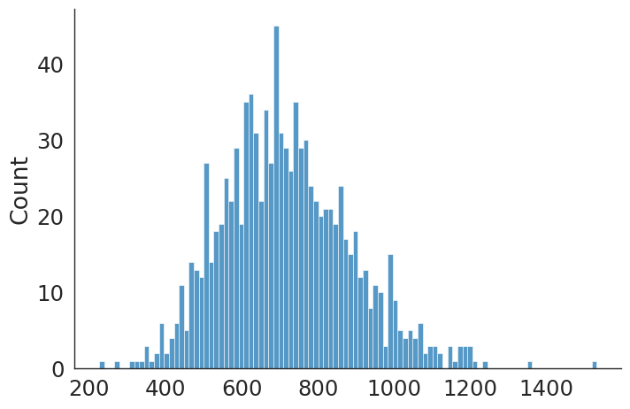

Chapter 3.2 — Monte Carlo Simulation with Distribution Fitting#
This notebook demonstrates the full Monte Carlo workflow:
Define input variables with known probability distributions.
Sample from those distributions many times.
Compute the output quantity for each sample.
Use the accumulated results to estimate the output distribution.
Fit a named statistical distribution to the output using the
fitterlibrary.
When to use this approach:
Individual variable distributions are known or can be estimated from data.
The output quantity is a deterministic function of the inputs.
You need both the expected value and the uncertainty of the output.
The fitter library wraps scipy.stats and tests dozens of distributions simultaneously, ranking them by goodness of fit (sum-of-squared-error or KS statistic).
Setup — Define Input Distributions#
#!pip install fitter
import random
import numpy as np
import seaborn as sns
from fitter import Fitter, get_common_distributions, get_distributions
Monte Carlo Simulation — Run N Iterations#
# Define the inputs and their probability distributions
inputs = {"input_1": {"mean": 10, "std_dev": 2},
"input_2": {"mean": 20, "std_dev": 3}}
# Number of iterations
num_iterations = 1000
# Storage for simulation results
results = []
Analyse Results#
# Run the simulation
for i in range(num_iterations):
# Generate random values for each input based on its distribution
input_1 = np.random.normal(inputs["input_1"]["mean"], inputs["input_1"]["std_dev"])
input_2 = np.random.normal(inputs["input_2"]["mean"], inputs["input_2"]["std_dev"])
# Calculate the output of the model
output = input_1**2 +input_1*input_2+ input_2**2
# Store the result
results.append(output)
Visualise the Output Distribution#
# Analyze the results
mean_result = np.mean(results)
std_dev_result = np.std(results)
Distribution Fitting with fitter#
The fitter library tests all scipy.stats distributions and ranks them by fit quality. We first run on all available distributions, then restrict to common ones for speed.
# Visualize the results
sns.set_style('white')
sns.set_context("paper", font_scale = 2)
sns.displot(data=results, x=results, kind="hist", bins = 100, aspect = 1.5)
# Print the results
print("Mean result: ", mean_result)
print("Standard deviation of result: ", std_dev_result)
Mean result: 717.2310656965162
Standard deviation of result: 170.11285061019177

f = Fitter(results,distributions=get_distributions(),timeout=60,bins=50)#,xmin=0.1, xmax=1 )
#get_common_distributions() ##['gamma','lognorm',"beta","burr","norm"]
f.fit()
f.summary()
Fitting 109 distributions: 0%| | 0/109 [00:00<?, ?it/s]SKIPPED _fit distribution (taking more than 60 seconds)
Fitting 109 distributions: 26%|███▊ | 28/109 [00:04<00:32, 2.50it/s]/home/junior/anaconda3/lib/python3.9/site-packages/scipy/stats/_continuous_distns.py:3405: IntegrationWarning: The algorithm does not converge. Roundoff error is detected
in the extrapolation table. It is assumed that the requested tolerance
cannot be achieved, and that the returned result (if full_output = 1) is
the best which can be obtained.
t1 = integrate.quad(llc, -np.inf, x)[0]
Fitting 109 distributions: 45%|██████▋ | 49/109 [00:07<00:08, 6.78it/s]SKIPPED kstwo distribution (taking more than 60 seconds)
Fitting 109 distributions: 62%|█████████▎ | 68/109 [01:04<02:36, 3.82s/it]SKIPPED kappa4 distribution (taking more than 60 seconds)
Fitting 109 distributions: 63%|█████████▍ | 69/109 [01:07<02:19, 3.50s/it]SKIPPED levy_stable distribution (taking more than 60 seconds)
Fitting 109 distributions: 72%|██████████▋ | 78/109 [01:46<02:47, 5.39s/it]SKIPPED ncf distribution (taking more than 60 seconds)
Fitting 109 distributions: 72%|██████████▊ | 79/109 [01:56<03:24, 6.82s/it]SKIPPED nct distribution (taking more than 60 seconds)
Fitting 109 distributions: 73%|███████████ | 80/109 [02:04<03:24, 7.05s/it]SKIPPED ncx2 distribution (taking more than 60 seconds)
Fitting 109 distributions: 74%|███████████▏ | 81/109 [02:05<02:26, 5.25s/it]SKIPPED rv_continuous distribution (taking more than 60 seconds)
SKIPPED rv_histogram distribution (taking more than 60 seconds)
SKIPPED norminvgauss distribution (taking more than 60 seconds)
Fitting 109 distributions: 77%|███████████▌ | 84/109 [02:07<01:08, 2.72s/it]SKIPPED pearson3 distribution (taking more than 60 seconds)
Fitting 109 distributions: 78%|███████████▋ | 85/109 [02:08<00:58, 2.44s/it]SKIPPED powerlognorm distribution (taking more than 60 seconds)
Fitting 109 distributions: 81%|████████████ | 88/109 [02:25<01:25, 4.07s/it]/home/junior/anaconda3/lib/python3.9/site-packages/scipy/integrate/_quadpack_py.py:1151: IntegrationWarning: The maximum number of subdivisions (50) has been achieved.
If increasing the limit yields no improvement it is advised to analyze
the integrand in order to determine the difficulties. If the position of a
local difficulty can be determined (singularity, discontinuity) one will
probably gain from splitting up the interval and calling the integrator
on the subranges. Perhaps a special-purpose integrator should be used.
quad_r = quad(f, low, high, args=args, full_output=self.full_output,
Fitting 109 distributions: 83%|████████████▌ | 91/109 [02:45<01:35, 5.28s/it]SKIPPED recipinvgauss distribution (taking more than 60 seconds)
Fitting 109 distributions: 84%|████████████▋ | 92/109 [02:47<01:11, 4.23s/it]/home/junior/anaconda3/lib/python3.9/site-packages/scipy/integrate/_quadpack_py.py:1151: IntegrationWarning: The integral is probably divergent, or slowly convergent.
quad_r = quad(f, low, high, args=args, full_output=self.full_output,
Fitting 109 distributions: 89%|█████████████▎ | 97/109 [03:07<00:48, 4.06s/it]SKIPPED studentized_range distribution (taking more than 60 seconds)
Fitting 109 distributions: 91%|█████████████▌ | 99/109 [03:14<00:35, 3.55s/it]SKIPPED t distribution (taking more than 60 seconds)
Fitting 109 distributions: 94%|█████████████▏| 103/109 [03:42<00:36, 6.07s/it]SKIPPED triang distribution (taking more than 60 seconds)
Fitting 109 distributions: 95%|█████████████▎| 104/109 [03:43<00:23, 4.68s/it]SKIPPED truncweibull_min distribution (taking more than 60 seconds)
Fitting 109 distributions: 97%|█████████████▌| 106/109 [03:58<00:18, 6.15s/it]SKIPPED vonmises distribution (taking more than 60 seconds)
Fitting 109 distributions: 98%|█████████████▋| 107/109 [04:02<00:10, 5.39s/it]SKIPPED vonmises_line distribution (taking more than 60 seconds)
Fitting 109 distributions: 99%|█████████████▊| 108/109 [04:07<00:05, 5.32s/it]SKIPPED weibull_max distribution (taking more than 60 seconds)
Fitting 109 distributions: 100%|██████████████| 109/109 [04:14<00:00, 2.34s/it]
| sumsquare_error | aic | bic | kl_div | ks_statistic | ks_pvalue | |
|---|---|---|---|---|---|---|
| skewnorm | 8.260124e-07 | 861.272949 | -20893.688009 | inf | 0.012299 | 9.977471e-01 |
| fatiguelife | 8.277218e-07 | 863.573472 | -20891.620731 | inf | 0.012033 | 9.983797e-01 |
| invgamma | 8.287930e-07 | 856.557918 | -20890.327385 | inf | 0.012179 | 9.980529e-01 |
| genhyperbolic | 8.305788e-07 | 857.387016 | -20874.359583 | inf | 0.122731 | 1.382110e-13 |
| alpha | 8.306096e-07 | 855.218029 | -20888.137940 | inf | 0.016867 | 9.338545e-01 |
best_m=f.get_best(method = 'sumsquare_error')
best_m
{'powernorm': {'c': 0.17991120337774258,
'loc': 514.1173194334983,
'scale': 93.54968282371107}}
Summary#
The Monte Carlo approach converts knowledge about input distributions into an estimate of the output distribution. The fitter library then identifies which named distribution best describes the output — this distribution can be used in subsequent simulations or reported alongside confidence intervals.
Next: Chapter 4 (Cholesky Decomposition) extends this to multi-variable synthesis where inter-variable correlations must also be preserved.